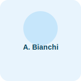
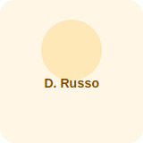
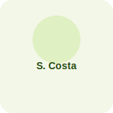
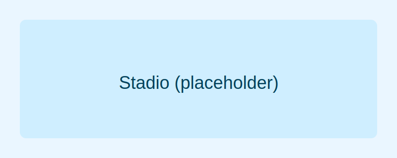

Bilancio della stagione
Una squadra che ha mostrato carattere in alcune partite ma non è riuscita a trovare continuità. Tra infortuni, cambi di modulo e notti in cui la rete non si è sbloccata, il risultato finale è stata la permanenza in Serie B.
Partite
38
Vittorie
10
Pareggi
11
Sconfitte
17
Cosa serve per tornare su?
- Progetto tecnico chiaro e stabile per tutta la stagione
- Mercato mirato: qualità negli attaccanti e solidità in difesa
- Più continuità e unione tra squadra, staff e tifosi
La strada è lunga, ma la passione della città e della tifoseria può diventare la spinta decisiva per ripartire e puntare alla promozione.
Prima Squadra
Roster esemplificativo (sostituisci con i nomi reali se preferisci).
| Foto | # | Nome | Ruolo |
|---|---|---|---|
|  | 1 | Alessandro Bianchi | Portiere |
|  | 2 | Davide Russo | Difensore |
|  | 9 | Simone Costa | Attaccante |
| 6 | Luca Romano | Difensore | |
| 8 | Matteo Ferri | Centrocampista | |
| 10 | Federico Galli | Trequartista |
Galleria
